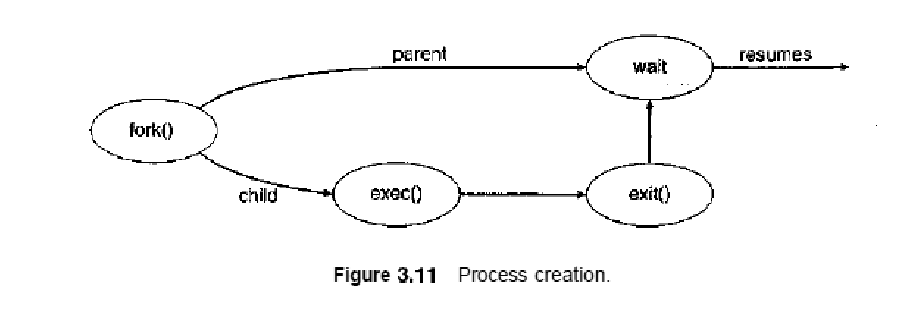
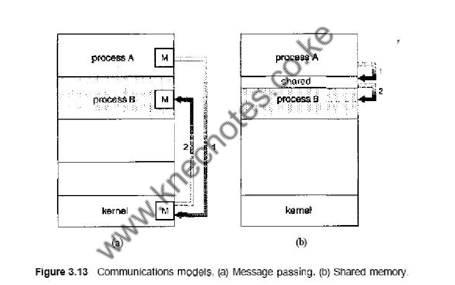
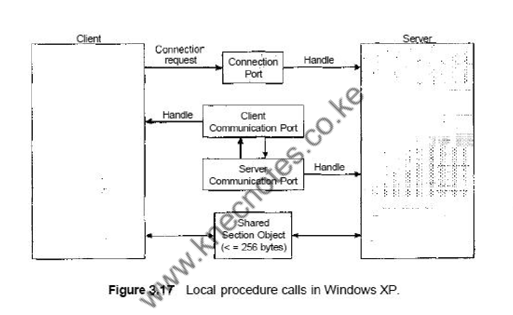

Module 3: Processes
🎯 Learning Objectives
- Define and understand process concepts.
- Learn about process states and process control blocks.
- Explore process scheduling and operations.
- Understand interprocess communication (IPC) mechanisms.
1.3 PROCESSES
1.3.1 Process concepts
Process Definition
📚 Content: Process : A process is a program in execution. A process is more than the program code, which is sometimes known as the text section. It also includes the current activity, as represented by the value of the program counter and the contents of the processor's registers. A process generally also includes the process stack, which contains temporary data (such as function parameters, return addresses, and local variables), and a data section, which contains global variables. A process may also include a heap, which is memory that is dynamically allocated during process run time.
Structure of a process
We emphasize that a program by itself is not a process; a program is a passive entity, such as a file containing a list of instructions stored on disk (often called an executable file), whereas a process is an active entity, with a program counter specifying the next instruction to execute and a set of associated resources. A program becomes a process when an executable file is loaded into memory.
Two common techniques for loading executable files are double-clicking an icon representing the executable file and entering the name of the executable file on the command line (as in prog. exe or a. out.)
Process State
As a process executes, it changes state. The state of a process is defined in part by the current activity of that process. Each process may be in one of the following states:
- New. The process is being created.
- Running. Instructions are being executed.
- Waiting. The process is waiting for some event to occur (such as an I/O completion or reception of a signal).
- Ready. The process is waiting to be assigned to a processor.
- Terminated. The process has finished execution.
These names are arbitrary, and they vary across operating systems. The states that they represent are fotind on all systems, however. Certain operating systems also more finely delineate process states. It is important to realize that only one process can be running on any processor at any instant.
Process Control Block
Each process is represented in the operating system by a process control block (PCB)—also called a task control block.
- Process state. The state may be new, ready, running, and waiting, halted, and so on.
- Program counter-The counter indicates the address of the next instruction to be executed for this process.
- CPU registers- The registers vary in number and type, depending on the computer architecture. They include accumulators, index registers, stack pointers, and general-purpose registers, plus any condition-code information.
- CPU-scheduling information- This information includes a process priority, pointers to scheduling queues, and any other scheduling parameters.
- Memory-management information- This information may include such information as the value of the base and limit registers, the page tables, or the segment tables, depending on the memory system used by the operating system
- Accounting information-This information includes the amount of CPU and real time used, time limits, account members, job or process numbers, and so on.
- I/O status information-This information includes the list of I/O devices allocated to the process, a list of open files, and so on.
1.3.2 Process Scheduling
The process scheduler selects an available process (possibly from a set of several available processes) for program execution on the CPU.
As processes enter the system, they are put into a job queue, which consists of all processes in the system. The processes that are residing in main memory and are ready and waiting to execute are kept on a list called the ready queue.
This queue is generally stored as a linked list. A ready-queue header contains pointers to the first and final PCBs in the list. Each PCB includes a pointer field that points to the next PCB in the ready queue.
Each rectangular box represents a queue. Two types of queues are present: the ready queue and a set of device queues. The circles represent the resources that serve the queues, and the arrows indicate the flow of processes in the system.
A new process is initially put in the ready queue. It waits there till it is selected for execution, or is dispatched. Once the process is allocated the CPU and is executing, one of several events could occur:
- The process could issue an I/O request and then be placed in an I/O queue.
- The process could create a new sub process and wait for the sub process’s termination.
- The process could be removed forcibly from the CPU, as a result of an interrupt, and be put back in the ready queue.
Schedulers
A process migrates among the various scheduling queues throughout its lifetime. The operating system must select, for scheduling purposes, processes from these queues in some fashion.
The selection process is carried out by the appropriate scheduler. The long-term scheduler, or job scheduler, selects processes from this pool and loads them into memory for execution. The short-term scheduler, or CPU scheduler, selects from among the processes that are ready to execute and allocates the CPU to one of them.
1.3.3 Operations on Processes
Process Creation
A process may create several new processes, via a create-process system call, during the course of execution. The creating process is called a parent process, and the new processes are called the children of that process. Each of these new processes may in turn create other processes, forming a tree of processes.
Most operating systems identify processes according to a unique process identifier (or pid), which is typically an integer number. These processes are responsible for managing memory and file systems. The sched process also creates the init process, which serves as the root parent process for all user processes.
When a process creates a new process, two possibilities exist in terms of execution:
- The parent continues to execute concurrently with its children.
- The parent waits until some or all of its children have terminated.
There are also two possibilities in terms of the address space of the new process:
- The child process is a duplicate of the parent process (it has the same program and data as the parent).
- The child process has a new program loaded into it.
Example code in C:
#include
#include
#include
int main()
{
pid-t pid;
/* fork a child process */
pid = fork();
if (pid < 0) {/* error occurred */
fprintf(stderr, "Fork Failed");
exit (-1) ;
}
else if (pid == 0} {/* child process */
execlpf"/bin/Is","Is",NULL);
}
else {/* parent process */
/* parent will wait for the child to complete */
wait(NULL);
printf("Child Complete");
exit (0) ;
}
}
In UNIX, as we've seen, each process is identified by its process identifier, which is a unique integer. A new process is created by the fork() system call. The new process consists of a copy of the address space of the original process. This mechanism allows the parent process to communicate easily with its child process. Both processes (the parent and the child) continue execution at the instruction after the f ork(), with one difference: The return code for the fork() is zero for the new (child) process, whereas the (nonzero) process identifier of the child is returned to the parent. the exec() system call is used after a fork() system call by one of the two processes to replace the process's memory space with a new program. The exec () system call loads a binary file into memory (destroying the memory image of the program containing the execO system call) and starts its execution.
Process Termination
A process terminates when it finishes executing its final statement and asks the operating system to delete it by using the exit () system call. At that point, the process may return a status value (typically an integer) to its parent process (via the wait() system call). All the resources of the process—including physical and virtual memory, open files, and I/O buffers—are deal located by the operating system.
Termination can occur in other circumstances as well. A process can cause the termination of another process via an appropriate system call (for example, TerminateProcessO in Win32). Usually, such a system call can be invoked only by the parent of the process that is to be terminated.
A parent may terminate the execution of one of its children for a variety of reasons, such as these:
- The child has exceeded its usage of some of the resources that it has been allocated.
- The task assigned to the child is no longer required.
- The parent is exiting, and the operating system does not allow a child to continue if its parent terminates.
Consider that, in UNIX, we can terminate a process by using the exit() system call; its parent process may wait for the termination of a child process by using the wait() system call. The wait () system call returns the process identifier of a terminated child so that the parent can tell which of its possibly many children has terminated.
If the parent terminates, however, all its children have assigned as their new parent the init process.
1.3.4 Interprocess Communication
Processes executing concurrently in the operating system may be either independent processes or cooperating processes. A process is independent if it cannot affect or be affected by the other processes executing in the system.
Any process that does not share data with any other process is independent. A process is cooperating if it can affect or be affected by the other processes executing in the system.
There are several reasons for providing an environment that allows process cooperation:
- Information sharing. Since several users may be interested in the same piece of information (for instance, a shared file), we must provide an environment to allow concurrent access to such information.
- Computation speedup. If we want a particular task to run faster, we must break it into subtasks, each of which will be executing in parallel with the others. Notice that such a speedup can be achieved only if the computer has multiple processing elements (such as CPUs or I/O channels).
- Modularity. We may want to construct the system in a modular fashion, dividing the system functions into separate processes or threads. • Convenience. Even an individual user may work on many tasks at the same time. For instance, a user may be editing, printing, and compiling in parallel.
Cooperating processes require an interprocess communication (IPC) mechanism that will allow them to exchange data and information. There are two fundamental models of interprocess communication:
- shared memory and (2) message passing. In the shared-memory model, a region of memory that is shared by cooperating processes is established. Processes can then exchange information by reading and writing data to the shared region. In the message passing model, communication takes place by means of messages exchanged between the cooperating processes.
Message passing is useful for exchanging smaller amounts of data, because no conflicts need be avoided. Message passing is also easier to implement than is shared memory for intercomputer communication. Shared memory allows maximum speed and convenience of communication, as it can be done at memory speeds when within a computer.
Shared memory is faster than message passing, as message-passing systems are typically implemented using system calls and thus require the more time consuming task of kernel intervention.
Message-Passing Systems
The scheme requires that these processes share a region of memory and that the code for accessing and manipulating the shared memory be written explicitly by the application programmer. Another way to achieve the same effect is for the operating system to provide the means for cooperating processes to communicate with each other via a message-passing facility. Message passing provides a mechanism to allow processes to communicate and to synchronize their actions without sharing the same address space and is particularly useful in a distributed environment, where the communicating processes may reside on different computers connected by a network.
A message-passing facility provides at least two operations: send(message) and receive(message). Messages sent by a process can be of either fixed or variable size. If only fixed-sized messages can be sent, the system-level implementation is straightforward. This restriction, however, makes the task of programming more difficult. Conversely, variable-sized messages require a more complex system-level implementation, but the programming task becomes simpler. This is a common kind of tradeoff seen throughout operating system design.
Naming in IPC
Processes that want to communicate must have a way to refer to each other. They can use either direct or indirect communication.
Under direct communication, each process that wants to communicate must explicitly name the recipient or sender of the communication. In this scheme, the send.0 and receive() primitives are defined as:
- send(P, message)—Send a message to process P.
- receive (Q, message)—Receive a message from process Q.
A communication link in this scheme has the following properties:
- A link is established automatically between every pair of processes that want to communicate. The processes need to know only each other's identity to communicate.
- A link is associated with exactly two processes.
- Between each pair of processes, there exists exactly one link.
The disadvantage in both of these schemes (symmetric and asymmetric) is the limited modularity of the resulting process definitions. Changing the identifier of a process may necessitate examining all other process definitions.
Synchronization in IPC
Communication between processes takes place through calls to send() and receive () primitives. There are different design options for implementing each primitive. Message passing may be either blocking or nonblocking— also known as synchronous and asynchronous.
- Blocking send- The sending process is blocked until the message is received by the receiving process or by the mailbox.
- Nonblocking send- The sending process sends the message and resumes operation.
- Blocking receive- The receiver blocks until a message is available.
- Nonblocking receive- The receiver retrieves either a valid message or a null.
Buffering in IPC
Whether communication is direct or indirect, messages exchanged by communicating processes reside in a temporary queue. Basically, such queues can be implemented in three ways:
- Zero capacity- The queue has a maximum length of zero; thus, the link cannot have any messages waiting in it. In this case, the sender must block until the recipient receives the message.
- Bounded capacity- The queue has finite length n; thus, at most n messages can reside in it. If the queue is not full when a new message is sent, the message is placed in the queue (either the message is copied or a pointer to the message is kept), and the sender can continue execution without waiting. The links capacity is finite, however. If the link is full, the sender must block until space is available in the queue.
- Unbounded capacity- The queues length is potentially infinite; thus, any number of messages can wait in it. The sender never blocks.
1.3.5 Examples of IPC Systems
An Example: Windows XP
The Windows XP operating system is an example of modern design that employs modularity to increase functionality and decrease the time needed to implement new features. Windows XP provides support for multiple operating environments, or subsystems, with which application programs communicate via a message-passing mechanism. The application programs can be considered clients of the Windows XP subsystem server.
The message-passing facility in Windows XP is called the local procedure call (LPC) facility. The LPC in Windows XP communicates between two processes on the same machine. It is similar to the standard RPC mechanism that is widely used, but it is optimized for and specific to Windows XP. Windows XP uses a port object to establish and maintain a connection between two processes. Every client that calls a subsystem needs a communication channel, which is provided by a port object and is never inherited. Windows XP uses two types of ports: connection ports and communication ports. They are really the same but are given different names according to how they are used. Connection ports are named objects and are visible to all processes
The communication works as follows:
- The client opens a handle to the subsystem's connection port object.
- The client sends a connection request.
- The server creates two private communication ports and returns the handle to one of them to the client.
- The client and server use the corresponding port handle to send messages or callbacks and to listen for replies.
Windows XP uses two types of message-passing techniques over a port that the client specifies when it establishes the channel. The simplest, which is used for small messages, uses the port's message queue as intermediate storage and copies the message from one process to the other. Under this method, messages of up to 256 bytes can be sent. If a client needs to send a larger message, it passes the message through a section object, which sets up a region of shared memory. The client has to decide when it sets up the channel whether or not it will need to send a large message. If the client determines that it does want to send large messages, it asks for a section object to be created. Similarly, if the server decides that replies will be large, it creates a section object. So that the section object can be used, a small message is sent that contains a pointer and size information about the section object. This method is more complicated than the first method, but it avoids data copying. In both cases, a callback mechanism can be used when either the client or the server cannot respond immediately to a request.
